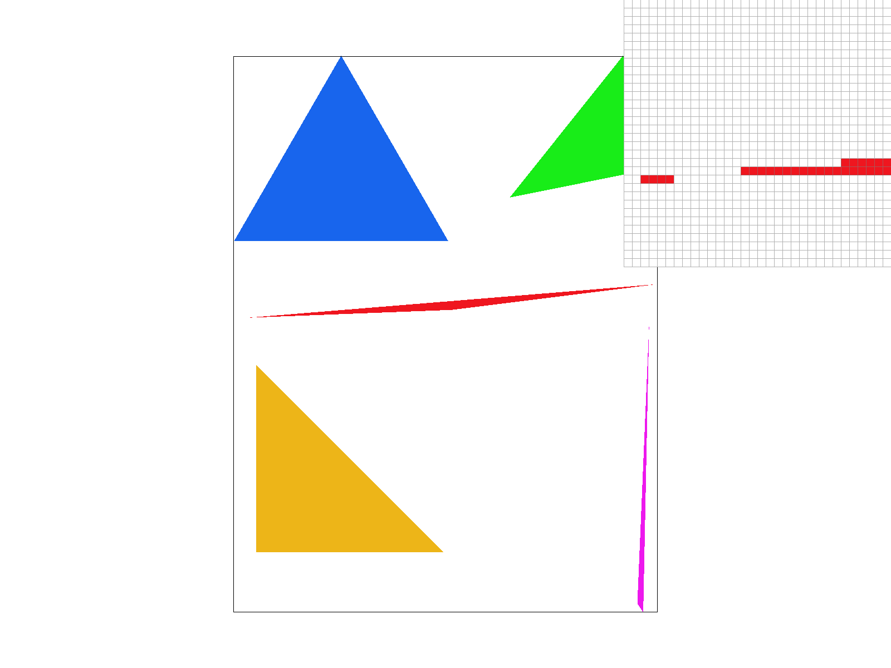
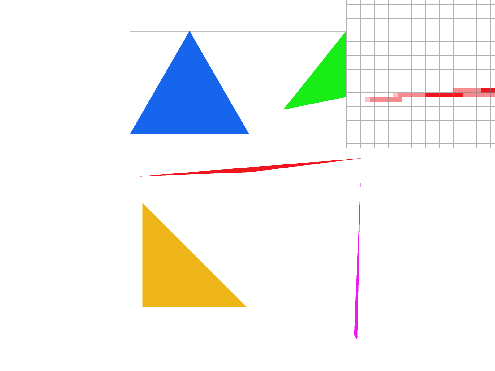
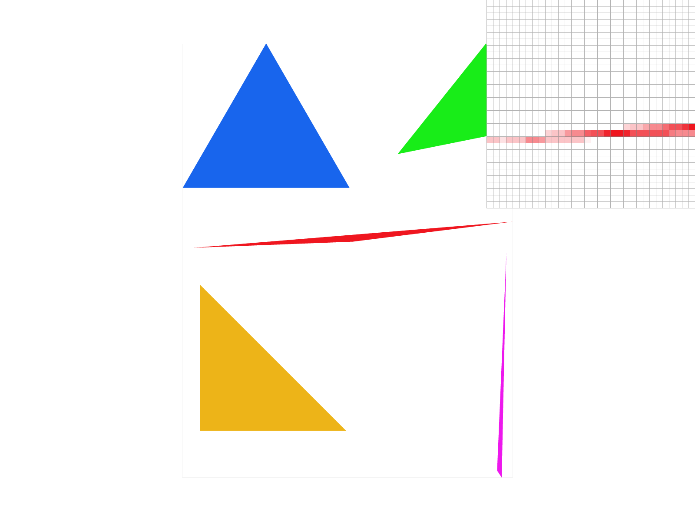
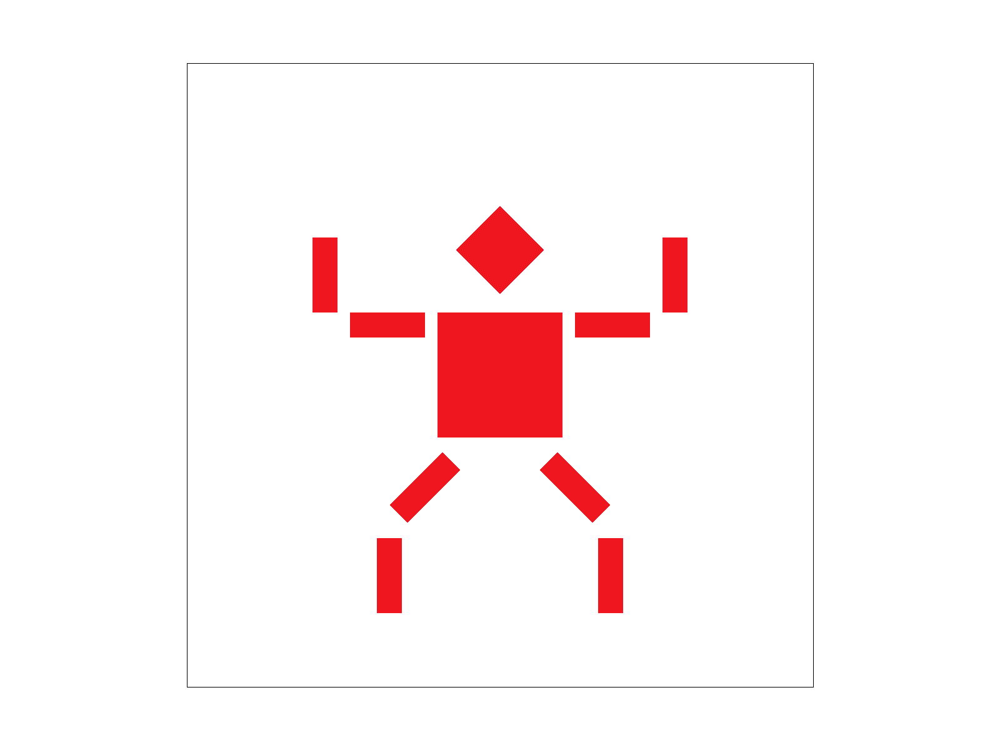
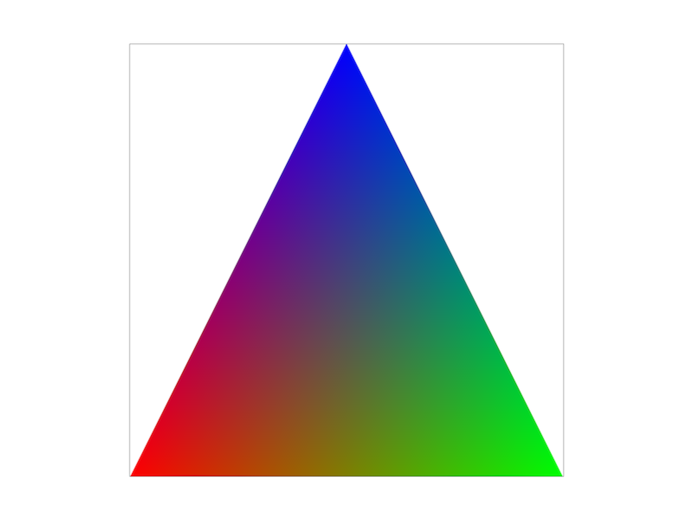
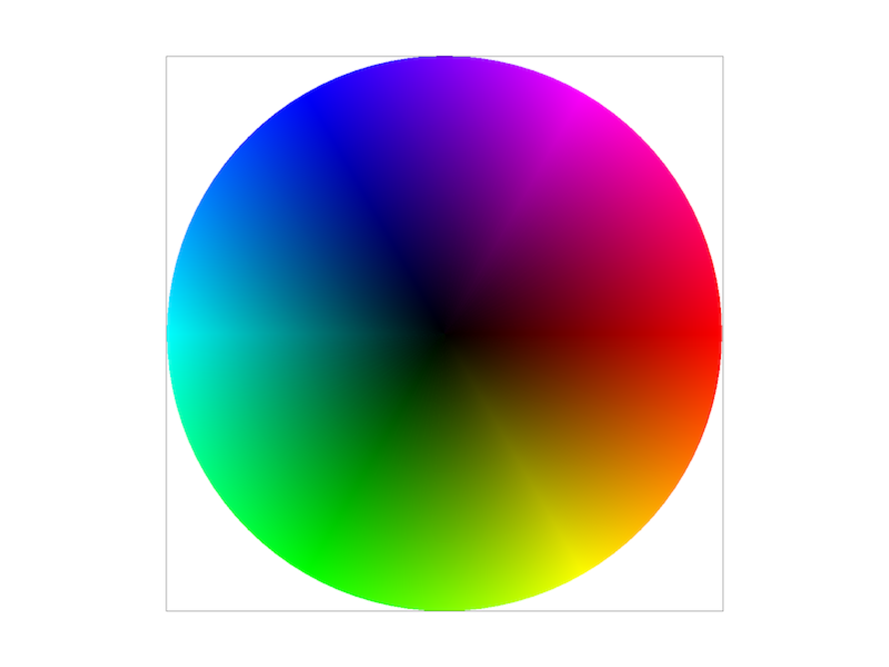
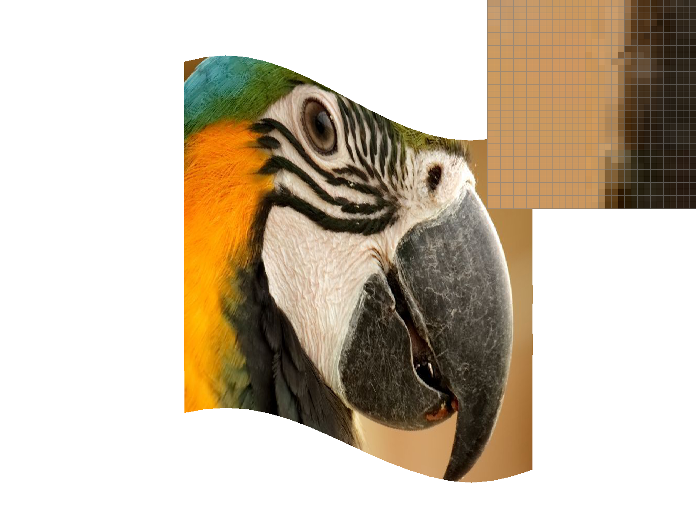
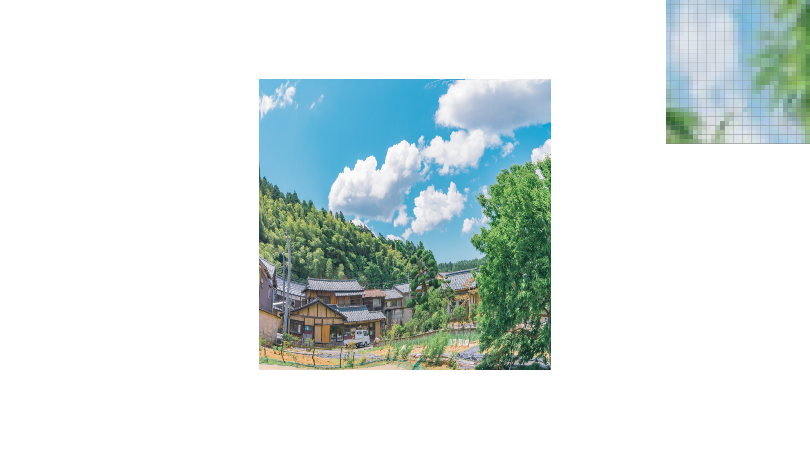

We chose to implement rasterization using Incremental Triangle Traversal. The basic idea is to traverse each pixel inside the triangle, line by line. Our implementation first sorts the 3 points of the triangle by their y-component, so that the we can draw the triangle from top (low y) to bottom (high y). Starting at the top point, p0, the algorithm goes downward line by line:
draw_horizontal_line, along with the y-value of the current line. This function simply draw a single line of pixels on the given y, filling in any pixels between the two x-values.This achieves a better result than testing every pixel of the triangle's bounding box by only visiting pixels that are inside the triangle. Pixels outside the triangle are never tested.
Sample rate 1:
Extra Credit: Performance vs. Bounding Box Approach
| Incremental Traversal | Bounding Box | Speedup | |
|---|---|---|---|
| Run 1 | 5946 | 42082 | 7.1x |
| Run 2 | 5681 | 41886 | 7.4x |
| Run 3 | 5412 | 41928 | 7.7x |
| Average | 5680 | 41965 | 7.4x |
As can be seen by the stats from 3 different runs of each approach, Incremental Traversal consistently outperforms the Bounding Box approach by a speedup of at least 7 times.
Super sampling is useful because it approximates the effect of filtering the image with a 1-pixel box filter. This reduces the aliasing, resulting in a clearer and more visually pleasing image.
We implemented super sampling by just increasing the resolution of the sample buffer by a factor of the sample rate. The rasterization code stayed largely the same, but just treated the sample buffer as a larger resolution buffer. The only changes to the individual rasterization functions were to convert the input coordinates to the new sample buffer resolution. The most major change was in the resolve_to_framebuffer function, in which the sample buffer must be downsampled into the frame buffer. This was achieved by simple taking sample_rate samples from the sample_buffer for each pixel in the frame buffer. All of the sampled colors were averaged, and the averaged color is written to the frame buffer.
As can be seen in the images of different sample rates, the higher the sample rate, the smoother the edges of the triangles look. Specifically, the left end of the red triangle (which is shown in the inspector) looks much better. The issues in the screenshot of a sample rate of 1 are caused because as the triangle gets thinner, it becomes easier for it to avoid touching the center point of any pixels, the points which are actually being sampled. When we increase the sample rate, the number of pixels sampled effectively increases, decreasing the chances that an area of this triangle could entirely avoid touching any of the sampled points.
Sample rate 1:
Sample rate 4:
Sample rate 16:
This task was fairly easy to implement, and mostly involved just copying formulas from lecture slides. Here is our robot man, who is performing some kind of squat:
Barycentric coordinates are a specialized coordinate system to define locations within a triangle. Points in this coordinate system can be considered as triple of weights, alpha, beta, and gamma, of each vertex of the triangle where the sum of the weights is always one. The alpha, beta, and gamma values are very useful for interpolating colors and textures onto the triangle. For instance, shown below is a triangle with one red, one green, and one blue vertex and using barycentric interpolation the rest of the triangle can be filled with a smooth gradient by interpolating the R, G, and B values of the verticies.
Triangle with one red, green, and blue vertex and interpolated gradient in the center:
Color Wheel - With default viewing parameters and sample rate 1:
First, we did the steps we took for rasterizing a regular triangle. We scaled the positions of the verticies by the square root of the sample rate and then swapped the points such that they were ordered by lowest y value. Then we implemented RasterizerImp::draw_textured_line which would draw a line of the triangle by taking in a left x_limit, a right x_limit and a height, and looping through every point between the limits. We would transform the xy coordinates into uv coordinates by converting the xy coordinates into barycentric coordinates and then interpolating the uv coordinates. Finally the uv coordinates were used to retrieve the texture's color.
Then, we implemented Texture::sample_nearest(...) and Texture::sample_bilinear(...). For sample_nearest(...) we simply round the uv coordinates and returned the texel at the rounded uv coordinates. For sample_bilinear(...) we returned the linearly interpolated colors of the four texels surrounding uv. We did this by linearly interpolating the colors for each pair of texels horizontaly. Then we linearly interpolate the two interpolated colors, and return that color.
In general, bilinear pixel interpolation sampling does a better job than nearest pixel sampling in providing a smoother, anti-aliased image. The more magnified (multiple pixels per texel) the image becomes, the more bilinear interpolation out performs nearest pixel by having better anti-aliasing. When the image is zoomed out very far (1 pixel per many texels) there is much less of a difference between nearest pixel and bilinear methods.
Nearest pixel at 1 sample per pixel. Note the jaggies on the parrot's beak:
Bilinear at 1 sample per pixel. The jaggies are mostly gone on the parrot's beak:
Nearest pixel at 16 samples per pixel. The jaggies are mostly gone on the parrot's beak, but the detail on the beak has also gone:
Bilinear at 16 sample per pixel. The jaggies are completely gone, and is slightly sharper than bilinear at 1 sample per pixel:
Mipmaps for textures are sets of a texture where each level of the mipmap is progressively a lower resolution of the previous. Using these mipmap levels we can perform level sampling of the texture where we reduce aliasing artifacts by calculating different mipmap levels for different parts of the image. A higher-resolution mipmap level is used for more detailed objects, such as those close to the camera, and lower-resolution images are used for objects farther away.
When implementing level sampling, we modified draw_textured_line to fill in the SampleParams struct and passed it into Texture::sample to get the color to fill the pixel with. In texture.cpp, we implemented Texture::get_level to calculate the mipmap level for SampleParams. To do that, we followed the steps of calculating the uv barycentric coordinates of (x,y), (x+1,y), and (x,y+1); then calculating the difference vectors; and finally scalling the difference vectors accordingly by the width and height of the full-resolution texture image. When L_NEAREST is selected, Texture::get_level() returns the level rounded otherwise if L_LINEAR is selected it returns the float level. Finally, Texture::sample() will calculate the colors for the given level and a level above and the linearly interpolate the colors using the level to calculate the final color of the pixe.
Pixel Sampling - The fastest of the three sampling techniques as well as the least memory intensive method. However, it has the worst antialiasing power and is very susceptible to jaggies and the moire effect.
Level Sampling - Slower than pixel sampling because of the three linear interpolations needed per pixel but still significantly faster than super sampling. The most memory intensive method because of the need to store the copies of the lower resolution textures but because of the quick drop in resolution it only requires arround 33% more memory than a single texture. It has pretty good antialiasing power by reducing jaggies but it is susceptible to overblurring.
Pixel Super Sampling - The slowest and most costly of the three sampling techniques because it requires multiple samples per pixel. Not as memory intensive as level sampling because we interpolate the colors as we sample each pixel. It has the best antialiasing power because we are able to tune the precision in exchange for compute cost.
Nearest pixel and 0 level at 1 sample per pixel:
Bilinear and 0 level at 1 sample per pixel:
Nearest pixel and nearest level at 1 sample per pixel:
Bilinear and nearest level at 1 sample per pixel:
